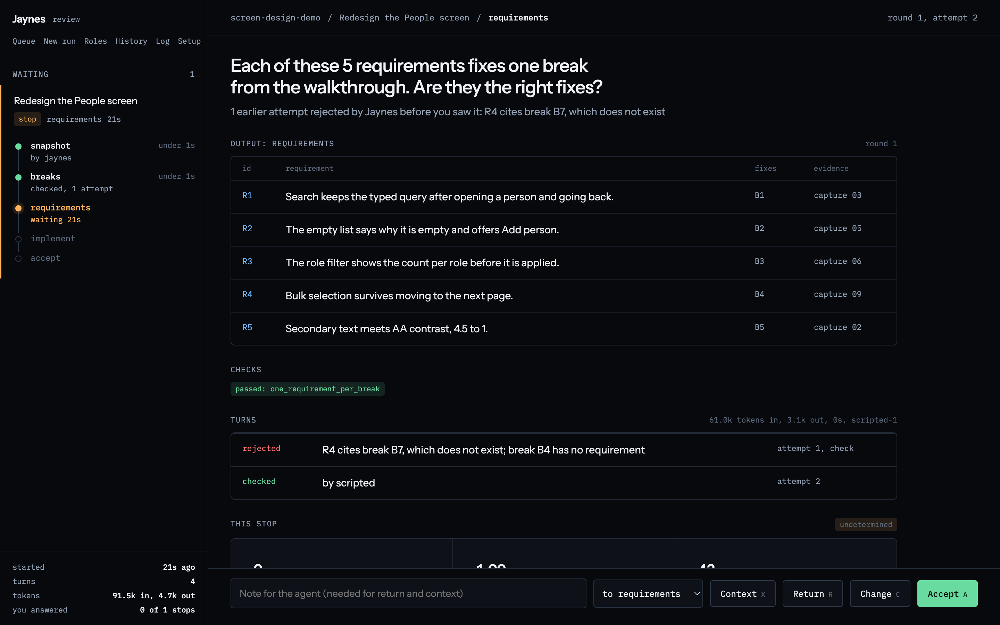

Your agent says done.
It took two hundred . Did it follow the process?
How many would you check?
Each dot is an action. A few are quiet mistakes.
your queue0
your time0 min
agentready
Both options cost you.
Review everything
agent20 min
you1 h 40 min
Approve everything
agent20 min
shipped12 mistakes
The third option: get asked only where your judgment is needed. That is Jaynes.
Next: the recipeOne person running a company of agents counted:
0actions
0they saw
A one-person company run by agents, Sep 1 to Oct 21, 2026.
A recipe the agent can't skip.
A is a recipe. The agent does one step at a time, and a check must pass before the next.
Every step ran in order, checked, and you answered where it mattered.
The recipe above, run 31 times. Run 1 is the one you just did.
asked youspot checkpassed throughyour answers, fast-forwarded
Each stop earns its own trust, and a step that matters can be set to always ask.
: 1 in 10 by default, a setting per stop. When they find problems, the stop asks every time again.
Start.
One paste into Claude Code or Codex. You come back when it calls.
Set up Jaynes and run this task with it: redesign the People screen Open it with uvx --from git+https://github.com/alk0x1/jaynes jaynes, start a run on this repository, and tell me when it stops for my answer.
One paste is being built. Today: install from GitHub and open the page. README
Claude Code
